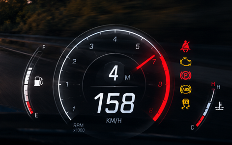

DA REFERÊNCIA À ESTRADA
O painel. Em movimento.
LIVE PREVIEWREFERÊNCIA · 158 KM/H
IMAGEM ORIGINAL

MOTOR LIGADOSVG VETORIAL · FUNDO TRANSPARENTE
SEQUÊNCIA DE CONDUÇÃO00:00 / 00:32
IgniçãoAceleraçãoTrocas de marchaLimitadorDesligamento
O mesmo painel que vai para o jogo. Abra este arquivo para testar sem FiveM, servidor ou instalação.